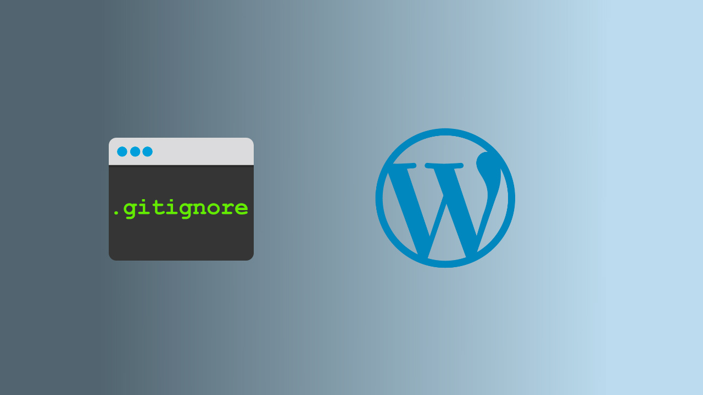
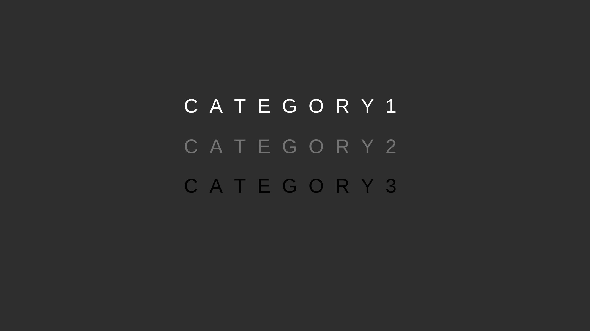
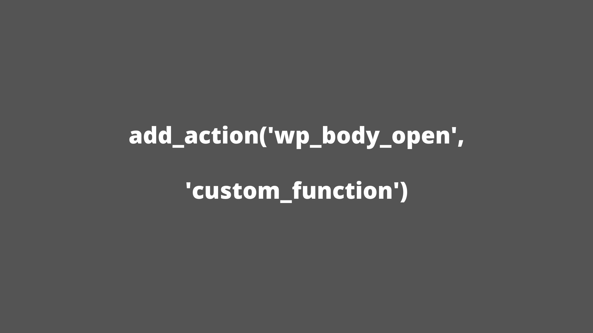
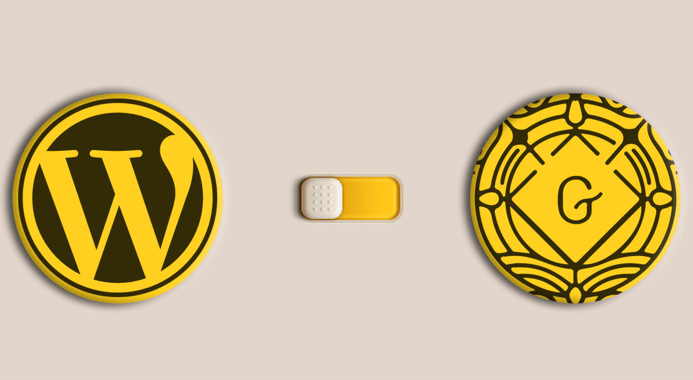
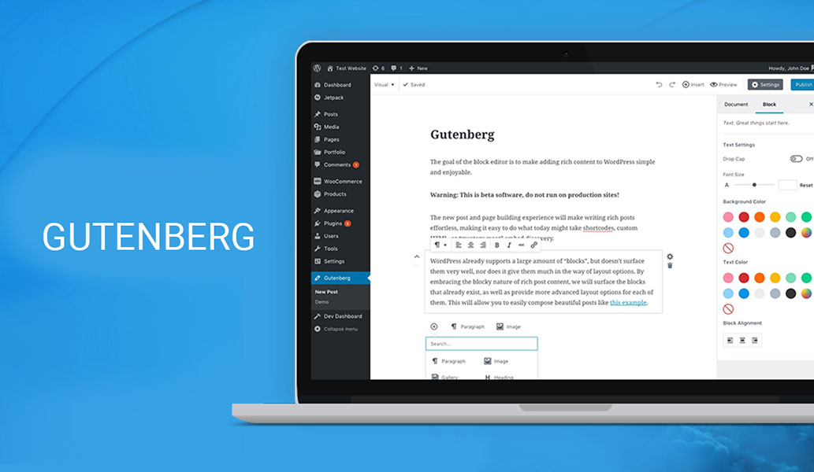

NewWebmaster.RU
Menu
Об авторе
Услуги
wordpress
(10)
битрикс
javascript
PHP
ubuntu
wordpress
Колонки в админке WordPress для таблиц записей
WordPress меняем отправителя почты

.gitignore для WordPress
Класс WP_Query — список аргументов

Как исключить некоторые категории с главной страницы WordPress

WordPress 5.2 важное обновление в темах

Как избавиться от Gutenberg в WordPress?

Как изменить шрифт в редакторе Gutenberg WordPress?
‹ Previous
1
2
Next ›